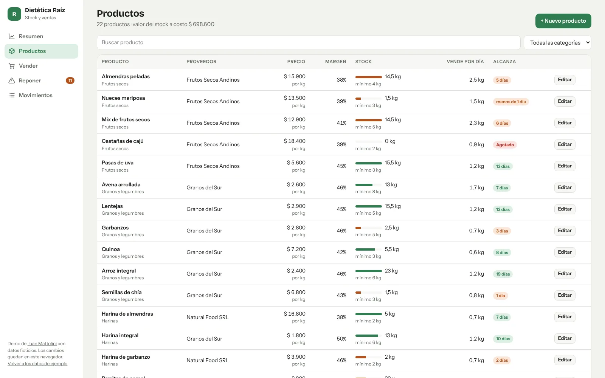
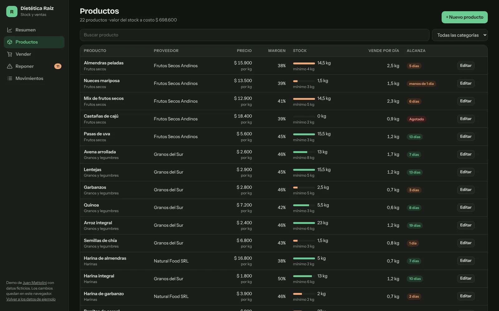
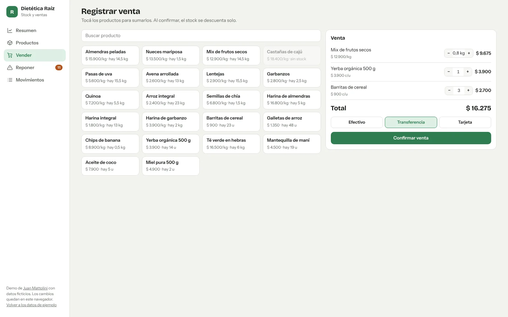
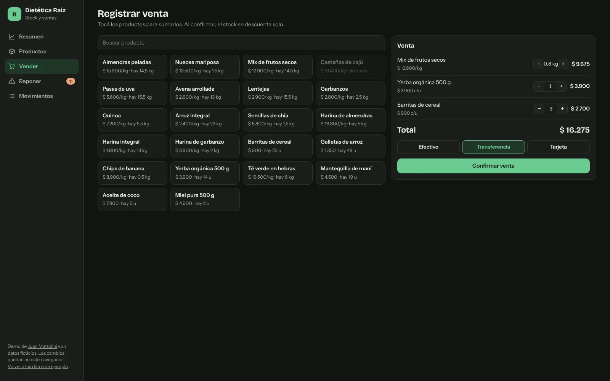
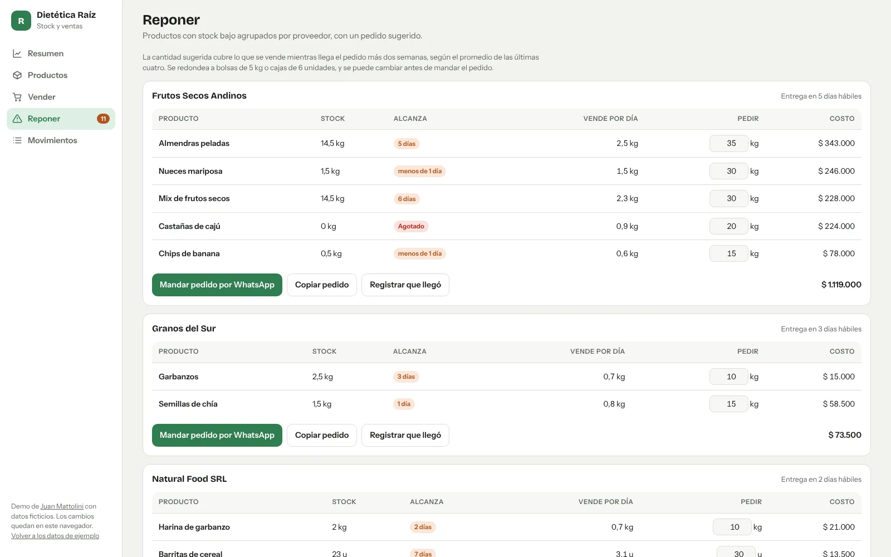
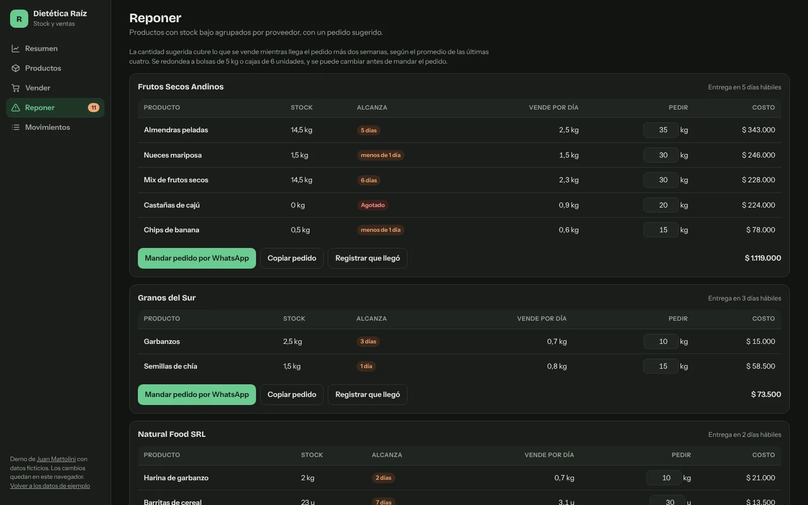

Resumen del negocio
Ventas de hoy comparadas con ayer a la misma hora, ventas del período contra el anterior, ticket promedio y margen bruto.
Gráfico de ventas por día, los más vendidos y el margen de cada categoría.
Un panel para una pyme que hoy lleva el stock en una planilla: cuánto se vendió, qué se está por terminar y cuánto pedirle a cada proveedor. La demo usa una dietética ficticia, Dietética Raíz, con dos meses de ventas de ejemplo, y se puede usar completa: vender, editar productos y registrar la mercadería que llega.








Capturas de la demo con datos ficticios.
Ventas de hoy comparadas con ayer a la misma hora, ventas del período contra el anterior, ticket promedio y margen bruto.
Gráfico de ventas por día, los más vendidos y el margen de cada categoría.
Lista con buscador y filtro por categoría. Muestra precio, margen, stock con su mínimo y para cuántos días alcanza según lo que se vende.
Alta y edición con aviso si el precio queda por debajo del costo.
Una caja simple: se suman productos por unidad o por kilo, se elige efectivo, transferencia o tarjeta y se confirma. No deja vender más de lo que hay.
Si algo queda bajo después de la venta, avisa en el momento.
Los productos con poco stock agrupados por proveedor, con cuánto pedir y el costo del pedido. La cantidad se puede cambiar antes de mandarlo.
Arma el mensaje con todo el pedido y lo abre en WhatsApp, o lo copia para mandarlo por mail. Cuando llega la mercadería, un botón la suma al stock.
Ventas e ingresos de mercadería en una sola lista, con fecha, detalle, medio de pago o proveedor e importe.
El local
Los datos
Las decisiones
Un mínimo fijo no alcanza: 3 kg de almendras duran dos días y 3 kg de té, un mes. La alerta mira para cuántos días alcanza el stock según lo que se vende y lo compara con lo que tarda cada proveedor en entregar.
La cantidad cubre lo que se vende mientras llega el pedido más dos semanas, redondeada a bolsas de 5 kg o cajas de 6. Es una cuenta que el dueño puede revisar, y la puede cambiar antes de mandarla.
Las ventas de hoy se comparan con las de ayer hasta la misma hora, no con el día entero. Los domingos cerrados se muestran como cerrados y no cuentan para el promedio.
Las barras se dibujan en SVG con el mismo código que arma el resto de la pantalla. La página carga rápido y se adapta al modo claro y oscuro sin configurar nada.
La caja no deja sumar más de lo que hay en stock, y el stock se descuenta en el mismo momento en que se guarda la venta.
Productos, proveedores y ventas ya tienen la forma de las tablas de la base. Pasar a Supabase suma usuarios por local y que dos cajas vendan a la vez sin pisarse.
Demo desarrollada en octubre de 2026.
¿Tu negocio lleva el stock en una planilla? Contame cómo lo manejás hoy.
mattolinijuansebastian@gmail.com